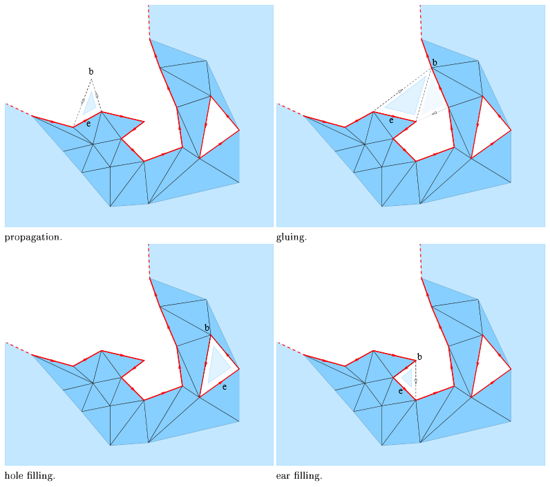
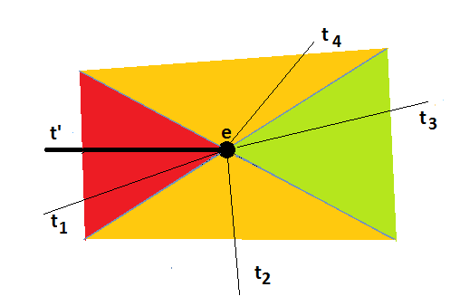
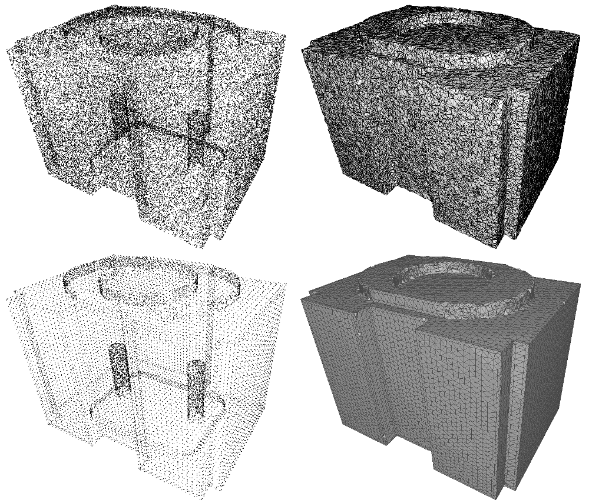

- Author
- Tran Kai Frank Da and David Cohen-Steiner
Surface reconstruction from an unstructured point cloud amounts to generate a plausible surface that approximates well the input points. This problem is ill-posed as many surfaces can be generated. A wide range of approaches have been proposed to tackle this problem. Among them are variational methods [13][14], tensor voting [11], implicit surface [9][6], and Delaunay triangulations.
For Delaunay based algorithms the output surface is commonly generated as the union of some triangles selected in the 3D Delaunay triangulation of the input points. Such algorithms are either volume-based by generating as output the boundary of selected tetrahedra [3][4], or surface-based by selecting a set of triangles.
In most surface based Delaunay algorithms the triangles are selected independently, that is in parallel [1][2].
This chapter presents a surface-based Delaunay surface reconstruction algorithm that sequentially selects the triangles, that is it uses previously selected triangles to select a new triangle for advancing the front. At each advancing step the most plausible triangle is selected, and such that the triangles selected generates an orientable manifold triangulated surface.
Two other examples of this greedy approach are the ball pivoting algorithm and Boyer-Petitjean's algorithm [5][12]. In both algorithms a triangulated surface is incrementally grown starting from a seed triangle. Ball pivoting is fast, but the quality of the reconstruction depends on user defined parameters corresponding to the sampling density. The Boyer-Petitjean approach can handle non-uniform sampling, but fails when near co-circular points are encountered, and it does not provide any guarantee on the topology of the surface.
We describe next the algorithm and provide examples.
- Note
- A detailed tutorial on surface reconstruction is provided with a guide to choose the most appropriate method along with pre- and postprocessing.
Definitions and the Algorithm
A detailed description of the algorithm and the underlying theory are provided in [8].
The first step of the algorithm is the construction of a 3D Delaunay triangulation of the point set. The radius of a triangle \( t \) is the radius of the smallest sphere passing through the vertices of \( t\) and enclosing no sample point. In other words, the radius \( r_t\) is the distance from any vertex of \( t\) to the Voronoi edge dual to \( t\). This triangle with three boundary edges is the initial triangulated surface, and its boundary is the advancing front. The Delaunay triangle with the smallest radius is the starting point for the greedy algorithm.
The algorithm maintains a priority queue of candidate triangles, that is of valid triangles incident to the boundary edges of the current surface. The priority is the plausibility. While the priority queue is not empty, the algorithm pops from the queue the most plausible candidate triangle and adds it to the surface. New candidate triangles are pushed to the priority queue when new boundary edges appear on the advancing front. As the algorithm creates a two-manifold surface some candidate triangles can not be selected due to topological constraints which are explained next.
Topological Constraints
Any triangle \(t\) considered as the next potential candidate shares an edge \(e\) with the front of the current reconstruction. Let \(b\) be the vertex of \(t\) opposite to \(e\). There are four configurations where \(t\) is added to the surface.
- extension, if \(b\) is not yet on the surface.
- hole filling, if \(b\) is on the front and both neighbors of \(b\) on the front are on edge \(e\).
- ear filling, if \(b\) is on the front and one neighbor of \(b\) on the front is on edge \(e\).
- glueing, if \(b\) is on the front and no neighbor of \(b\) on the front is on edge \(e\).

While the first three operations never induce a non-manifold edge or vertex, we only can perform gluing, if triangle \(t\) has a twin facet, that is a triangle with an edge on the front and incident to \(b\), and the third vertex on edge \(e\).
A triangle is said valid when the above operations can be applied.
Plausibility of a Candidate Triangle
Valid triangles for an edge on the front are compared through their radius. While the radius is a good criterion in the case of 2D smooth curve reconstruction [7], we need another criterion for 3D surface reconstruction, namely the dihedral angle between triangles on the surface, that is the angle between the normals of the triangles. There are three bounds namely \( \alpha_\mathrm{sliver} \), \( \beta \), and \( \delta \).
The candidate triangle of an edge \( e \) is the triangle with the smallest radius:
- that is valid for \( e \), and
- that has \( \beta_t < \alpha_\mathrm{sliver} \), and
- that has its internal angles with \( e \) smaller than \( \delta \).
There may be no such triangle. In the implementation of the algorithm \( \alpha_\mathrm{sliver} \) and \( \delta\) are equal to \( 5\pi/6 \).
We denote by \( \beta_t\) the angle between the normal of a triangle \( t\) incident on a boundary edge \( e \) and the normal of the triangle on the surface incident to \( e \).
We define the plausibility grade \( p(t) \) as \( 1/r_t \), if \( \beta_t < \beta \), and \( -\beta_t \) else. The parameter \(
\beta \) can be specified by the user and is set by default to \( \pi/6\).
Let's have a look at the figure below.

\( \alpha_\mathrm{sliver}\) corresponds to the red wedge. The algorithm will never select triangle t1 even if it is the only candidate triangle.
\(\beta\) corresponds to the green wedge. If there is a candidate triangle in this zone, the one with the smallest radius is the most plausible.
If there is no candidate triangle in the green wedge, the triangle with the smallest angle between its normal and the normal of t' is chosen. In the figure above this would be triangle t4.
Dealing with Multiple Components, Boundaries and Sharp Edges
By construction the output of the algorithm is a connected orientable manifold with or without boundary. To cope with multiple components we merely look for a new seed facet among facets disjoint from the surface. In case of noisy data or outliers, the user must filter out small surface components.
It is impossible to handle all kinds of boundaries and non uniform sampling at the same time, as a void can either be an undersampled area of the surface, or a hole.
As we do not want the algorithm to rely on a uniformity condition on the sampling it will fill holes cut off from "flat" regions of the surface. However, in many cases a boundary component cannot be closed by adding a spanning disk such that the resulting disk is well sampled. Typically, closing a boundary component due to a transversal clipping of the operation, would yield large dihedral angles at boundary edges. Moreover, if the boundary is sufficiently well sampled, the radii of the two triangles incident on a boundary edge would be very different. These heuristic facts can be used for boundary detection.
More specifically, we discard any candidate triangle \( t \), for an edge \( e \) such that \( p(t) < 0\), and \( r_t > \mathrm{radius\_ratio\_bound} \times r_{t'}\) where \( t'\) is the triangle on the surface incident on \( e \). The parameter \(\mathrm{radius\_ratio\_bound}\) is specified by the user and is set by default to 5.
For the example given in Figure 70.2, we said that if there was no triangle t3 in the green wedge, triangle t4 would be chosen as it has the smallest angle between its normal and the normal of triangle t'. However, in case its radius was \(\mathrm{radius\_ratio\_bound}\) times larger than the radius of triangle t', triangle t2 would be chosen, assuming that its radius is not \(\mathrm{radius\_ratio\_bound}\) times larger.
Note that this heuristic implies that where the sampling is too sparse with respect to curvature, it must be sufficiently uniform for our algorithm to work.
Examples
The first of the following three examples presents a free function for doing surface reconstruction. For a sequence of points the function produces a sequence of triplets of indices describing the triangles of the surface. The second example presents a class that enables to traverse the surface represented in a 2D triangulation data structure where the faces are connected with the facets of underlying 3D Delaunay triangulation. The third example shows how to get outliers and the boundaries of the surface. The last example shows how to combine this algorithm with two CGAL algorithms in order to reconstruct surfaces with sharp features.
Examples for Global Function
The global function advancing_front_surface_reconstruction() takes an iterator range of points as input and writes for each face of the reconstructed surface a triplet of point indices into an output iterator. The following example writes the output triangulated surface to std::cout in accordance to the OFF format.
The function has an overload with an additional argument that allows to choose how to prioritize facets. It can be written in a way to avoid the generation of triangles with a perimeter larger than a given bound.
File Advancing_front_surface_reconstruction/reconstruction_fct.cpp
#include <iostream>
#include <fstream>
#include <algorithm>
#include <CGAL/Simple_cartesian.h>
#include <CGAL/Advancing_front_surface_reconstruction.h>
#include <CGAL/tuple.h>
#include <boost/lexical_cast.hpp>
typedef K::Point_3 Point_3;
typedef std::array<std::size_t,3> Facet;
std::ostream&
{
os << "3 " << f[0] << " " << f[1] << " " << f[2];
return os;
}
}
struct Perimeter {
double bound;
Perimeter(double bound)
: bound(bound)
{}
template <typename AdvancingFront, typename Cell_handle>
double operator() (const AdvancingFront& adv, Cell_handle& c,
const int& index) const
{
if(bound == 0){
return adv.smallest_radius_delaunay_sphere (c, index);
}
double d = 0;
c->vertex((index+2)%4)->point()));
if(d>bound) return adv.infinity();
c->vertex((index+3)%4)->point()));
if(d>bound) return adv.infinity();
c->vertex((index+3)%4)->point()));
if(d>bound) return adv.infinity();
return adv.smallest_radius_delaunay_sphere (c, index);
}
};
int main(int argc, char* argv[])
{
double per = (argc>2)?boost::lexical_cast<double>(argv[2]):0;
double radius_ratio_bound = (argc>3)?boost::lexical_cast<double>(argv[3]):5.0;
std::vector<Point_3> points;
std::vector<Facet> facets;
std::copy(std::istream_iterator<Point_3>(in),
std::istream_iterator<Point_3>(),
std::back_inserter(points));
Perimeter perimeter(per);
points.end(),
std::back_inserter(facets),
perimeter,
radius_ratio_bound);
std::cout << "OFF\n" << points.size() << " " << facets.size() << " 0\n";
std::copy(points.begin(),
points.end(),
std::ostream_iterator<Point_3>(std::cout, "\n"));
std::copy(facets.begin(),
facets.end(),
std::ostream_iterator<Facet>(std::cout, "\n"));
return 0;
}
IndicesOutputIterator advancing_front_surface_reconstruction(PointInputIterator b, PointInputIterator e, IndicesOutputIterator out, double radius_ratio_bound=5, double beta=0.52)
For a sequence of points computes a sequence of index triples describing the faces of the reconstruct...
Definition: Advancing_front_surface_reconstruction.h:2531
ostream & operator<<(ostream &os, const TriangulationDataStructure_3 &tds)
Kernel::FT squared_distance(Type1< Kernel > obj1, Type2< Kernel > obj2)
std::string data_file_path(const std::string &filename)
While the first example just writes index triples, the second example uses as output iterator a wrapper around a reference to a Surface_mesh and calls the function add_face().
File Advancing_front_surface_reconstruction/reconstruction_surface_mesh.cpp
#include <iostream>
#include <fstream>
#include <algorithm>
#include <array>
#include <CGAL/Exact_predicates_inexact_constructions_kernel.h>
#include <CGAL/Advancing_front_surface_reconstruction.h>
#include <CGAL/Surface_mesh.h>
#include <CGAL/disable_warnings.h>
typedef std::array<std::size_t,3> Facet;
struct Construct{
Mesh& mesh;
template < typename PointIterator>
Construct(Mesh& mesh,PointIterator b, PointIterator e)
: mesh(mesh)
{
for(; b!=e; ++b){
boost::graph_traits<Mesh>::vertex_descriptor v;
v = add_vertex(mesh);
mesh.point(v) = *b;
}
}
Construct& operator=(const Facet f)
{
typedef boost::graph_traits<Mesh>::vertex_descriptor vertex_descriptor;
typedef boost::graph_traits<Mesh>::vertices_size_type size_type;
mesh.add_face(vertex_descriptor(static_cast<size_type>(f[0])),
vertex_descriptor(static_cast<size_type>(f[1])),
vertex_descriptor(static_cast<size_type>(f[2])));
return *this;
}
Construct&
Construct&
operator++() { return *this; }
Construct
operator++(int) { return *this; }
};
int main(int argc, char* argv[])
{
std::vector<Point_3> points;
Mesh m;
std::copy(std::istream_iterator<Point_3>(in),
std::istream_iterator<Point_3>(),
std::back_inserter(points));
Construct construct(m,points.begin(),points.end());
points.end(),
construct);
std::cout << m << std::endl;
return 0;
}
Vector_2< Kernel > operator*(const Vector_2< Kernel > &v, const Kernel::RT &s)
Example for the Reconstruction Class
The class Advancing_front_surface_reconstruction provides access to a 2D triangulation data structure describing the output surface. The latter can be explored by hopping from a face to its neighboring faces, and by hopping from faces of the 2D triangulation data structure to corresponding facets of the underlying 3D Delaunay triangulation.
The type of the 2D triangulation data structure describing the reconstructed surface is the nested type Advancing_front_surface_reconstruction::Triangulation_data_structure_2.
The type Advancing_front_surface_reconstruction::Triangulation_data_structure_2::Vertex is model of the concept TriangulationDataStructure_2::Vertex and has additionally the method vertex_3() that returns an Advancing_front_surface_reconstruction::Vertex_handle to the associated 3D vertex.
The type Advancing_front_surface_reconstruction::Triangulation_data_structure_2::Face is model of the concept TriangulationDataStructure_2::Face and has additionally the method facet() that returns the associated Advancing_front_surface_reconstruction::Facet, and a method is_on_surface() for testing if a face is part of the reconstructed surface.
In case the surface has boundaries, the 2D surface has one vertex which is associated to the infinite vertex of the 3D triangulation.
The underlying 3D Delaunay triangulation can be accessed as well, using the API of the class Delaunay_triangulation_3.
The following example writes the surface to std::cout in accordance to the STL (Stereo Lithography) format.
File Advancing_front_surface_reconstruction/reconstruction_class.cpp
#include <iostream>
#include <fstream>
#include <algorithm>
#include <CGAL/Exact_predicates_inexact_constructions_kernel.h>
#include <CGAL/Advancing_front_surface_reconstruction.h>
typedef Reconstruction::Triangulation_3 Triangulation_3;
typedef Reconstruction::Triangulation_data_structure_2 TDS_2;
typedef K::Point_3 Point_3;
typedef K::Vector_3 Vector_3;
int main(int argc, char* argv[])
{
std::istream_iterator<Point_3> begin(in);
std::istream_iterator<Point_3> end;
Triangulation_3 dt(begin,end);
Reconstruction reconstruction(dt);
reconstruction.run();
const TDS_2& tds = reconstruction.triangulation_data_structure_2();
std::cout << "solid produced with CGAL::Advancing_front_surface_reconstruction\n";
for(TDS_2::Face_iterator fit = tds.faces_begin();
fit != tds.faces_end();
++fit){
if(reconstruction.has_on_surface(fit)){
int ci = f.second;
Point_3 points[3];
for(int i = 0, j = 0; i < 4; i++){
if(ci != i){
points[j] = ch->vertex(i)->point();
j++;
}
}
std::cout << " facet normal "
<< " outer loop\n"
<< " vertex " << points[0] << "\n"
<< " vertex " << points[1] << "\n"
<< " vertex " << points[2] << "\n"
<< " endloop\n"
<< " endfacet\n";
}
}
std::cout << "endsolid" << std::endl;
return 0;
}
The class Advancing_front_surface_reconstruction enables advanced users to provide the unstructured p...
Definition: Advancing_front_surface_reconstruction.h:205
Triangulation_data_structure::Facet Facet
Triangulation_data_structure::Cell_handle Cell_handle
CGAL::Vector_3< Kernel > unit_normal(const CGAL::Point_3< Kernel > &p, const CGAL::Point_3< Kernel > &q, const CGAL::Point_3< Kernel > &r)
Example for Outliers and Boundaries
Input points which are not on a surface are outliers. The member function outliers() returns an iterator range of those points.
Boundary edges can be traversed with the member function boundaries() It returns an iterator range type Boundary_range whose iterators have the value type Vertex_on_boundary_range. This is again an iterator range whose iterators have the value type Vertex_handle.
File Advancing_front_surface_reconstruction/boundaries.cpp
#include <fstream>
#include <iostream>
#include <CGAL/Exact_predicates_inexact_constructions_kernel.h>
#include <CGAL/Advancing_front_surface_reconstruction.h>
struct Perimeter {
double bound;
Perimeter(double bound)
: bound(bound)
{}
template <typename AdvancingFront, typename Cell_handle>
double operator() (const AdvancingFront& adv, Cell_handle& c,
const int& index) const
{
if(bound == 0){
return adv.smallest_radius_delaunay_sphere (c, index);
}
double d = 0;
c->vertex((index+2)%4)->point()));
if(d>bound) return adv.infinity();
c->vertex((index+3)%4)->point()));
if(d>bound) return adv.infinity();
c->vertex((index+3)%4)->point()));
if(d>bound) return adv.infinity();
return adv.smallest_radius_delaunay_sphere (c, index);
}
};
typedef Reconstruction::Triangulation_3 Triangulation_3;
typedef Reconstruction::Outlier_range Outlier_range;
typedef Reconstruction::Boundary_range Boundary_range;
typedef Reconstruction::Vertex_on_boundary_range Vertex_on_boundary_range;
typedef Reconstruction::Vertex_handle Vertex_handle;
typedef K::Point_3 Point_3;
int main(int argc, char* argv[])
{
std::istream_iterator<Point_3> begin(in);
std::istream_iterator<Point_3> end;
Perimeter perimeter(0.5);
Triangulation_3 dt(begin, end);
Reconstruction reconstruction(dt, perimeter);
reconstruction.run();
std::cout << reconstruction.number_of_outliers() << " outliers:\n" << std::endl;
for(const Point_3& p : reconstruction.outliers()){
std::cout << p << std::endl;
}
std::cout << "Boundaries:" << std::endl ;
for(const Vertex_on_boundary_range& vobr : reconstruction.boundaries()){
std::cout << "boundary\n";
for(Vertex_handle v : vobr){
std::cout << v->point() << std::endl;
}
}
return 0;
}
Example for Sharp Features
The priority queue used by the advancing front surface reconstruction algorithm can be modified to achieve robustness to sharp edges and provide piecewise-planar or hybrid reconstruction as described in [10]. Two other algorithms available in CGAL must be applied first as a preprocessing to the point set:

The quality of the reconstruction can be significantly improved thanks to point set structuring when dealing with shapes with sharp features, as shown on the previous figure. The following example shows how to define a priority functor that favors structurally coherent facets and makes the advancing front algorithm robust to sharp features.
File Advancing_front_surface_reconstruction/reconstruction_structured.cpp
#include <iostream>
#include <fstream>
#include <algorithm>
#include <array>
#include <CGAL/Exact_predicates_inexact_constructions_kernel.h>
#include <CGAL/structure_point_set.h>
#include <CGAL/Delaunay_triangulation_3.h>
#include <CGAL/Triangulation_vertex_base_with_info_3.h>
#include <CGAL/Advancing_front_surface_reconstruction.h>
#include <CGAL/IO/read_points.h>
#include <CGAL/disable_warnings.h>
#include <boost/lexical_cast.hpp>
typedef std::pair<Kernel::Point_3, Kernel::Vector_3> Point_with_normal;
typedef std::vector<Point_with_normal> Pwn_vector;
typedef CGAL::First_of_pair_property_map<Point_with_normal> Point_map;
typedef CGAL::Second_of_pair_property_map<Point_with_normal> Normal_map;
<
Kernel, Pwn_vector, Point_map, Normal_map> Traits;
typedef std::array<std::size_t,3> Facet;
struct On_the_fly_pair{
const Pwn_vector& points;
typedef std::pair<Point, std::size_t> result_type;
On_the_fly_pair(const Pwn_vector& points) : points(points) {}
result_type
operator()(std::size_t i) const
{
return result_type(points[i].first,i);
}
};
template <typename Structure>
struct Priority_with_structure_coherence {
Structure& structure;
double bound;
Priority_with_structure_coherence(Structure& structure,
double bound)
: structure (structure), bound (bound)
{}
template <typename AdvancingFront, typename Cell_handle>
double operator() (AdvancingFront& adv, Cell_handle& c,
const int& index) const
{
if (bound != 0)
{
double d = 0;
c->vertex((index+2)%4)->point()));
if(d>bound) return adv.infinity();
c->vertex((index+3)%4)->point()));
if(d>bound) return adv.infinity();
c->vertex((index+3)%4)->point()));
if(d>bound) return adv.infinity();
}
Facet f = {{ c->vertex ((index + 1) % 4)->info (),
c->vertex ((index + 2) % 4)->info (),
c->vertex ((index + 3) % 4)->info () }};
double weight = 100. * (5 - structure.facet_coherence (f));
return weight * adv.smallest_radius_delaunay_sphere (c, index);
}
};
<Triangulation_3,
Priority_with_structure_coherence<Structure> >
Reconstruction;
int main (int argc, char* argv[])
{
Pwn_vector points;
CGAL::parameters::point_map(Point_map()).
normal_map(Normal_map())))
{
std::cerr << "Error: cannot read file" << std::endl;
return EXIT_FAILURE;
}
std::cerr << "Shape detection... ";
Efficient_ransac ransac;
ransac.set_input(points);
ransac.add_shape_factory<Plane>();
Efficient_ransac::Parameters op;
op.probability = 0.05;
op.min_points = 100;
op.epsilon = (argc>2 ? boost::lexical_cast<double>(argv[2]) : 0.002);
op.cluster_epsilon = (argc>3 ? boost::lexical_cast<double>(argv[3]) : 0.02);
op.normal_threshold = 0.7;
ransac.detect(op);
Efficient_ransac::Plane_range planes = ransac.planes();
std::cerr << "done\nPoint set structuring... ";
Pwn_vector structured_pts;
Structure pss (points,
planes,
op.cluster_epsilon,
CGAL::parameters::point_map (Point_map()).
normal_map (Normal_map()).
for (std::size_t i = 0; i < pss.size(); ++ i)
structured_pts.push_back (pss[i]);
std::cerr << "done\nAdvancing front... ";
std::vector<std::size_t> point_indices(boost::counting_iterator<std::size_t>(0),
boost::counting_iterator<std::size_t>(structured_pts.size()));
Triangulation_3 dt (boost::make_transform_iterator(point_indices.begin(), On_the_fly_pair(structured_pts)),
boost::make_transform_iterator(point_indices.end(), On_the_fly_pair(structured_pts)));
Priority_with_structure_coherence<Structure> priority (pss,
1000. * op.cluster_epsilon);
Reconstruction R(dt, priority);
R.run ();
std::cerr << "done\nWriting result... ";
std::vector<Facet> output;
const Reconstruction::TDS_2& tds = R.triangulation_data_structure_2();
for(Reconstruction::TDS_2::Face_iterator fit = tds.faces_begin(); fit != tds.faces_end(); ++fit)
if(fit->is_on_surface())
fit->vertex(1)->vertex_3()->id(),
fit->vertex(2)->vertex_3()->id()));
std::ofstream f ("out.off");
f << "OFF\n" << structured_pts.size () << " " << output.size() << " 0\n";
for (std::size_t i = 0; i < structured_pts.size (); ++ i)
f << structured_pts[i].first << std::endl;
for (std::size_t i = 0; i < output.size (); ++ i)
f << "3 "
<< output[i][0] << " "
<< output[i][1] << " "
<< output[i][2] << std::endl;
std::cerr << "all done\n" << std::endl;
f.close();
return 0;
}
The class Advancing_front_surface_reconstruction_cell_base_3 is the default cell type for the class A...
Definition: Advancing_front_surface_reconstruction_cell_base_3.h:33
The class Advancing_front_surface_reconstruction_vertex_base_3 is the default vertex type for the cla...
Definition: Advancing_front_surface_reconstruction_vertex_base_3.h:43
Triangulation_data_structure::Vertex_handle Vertex_handle
bool read_points(const std::string &fname, PointOutputIterator output, const NamedParameters &np=parameters::default_values())
std::array< T, N > make_array(const T &...)